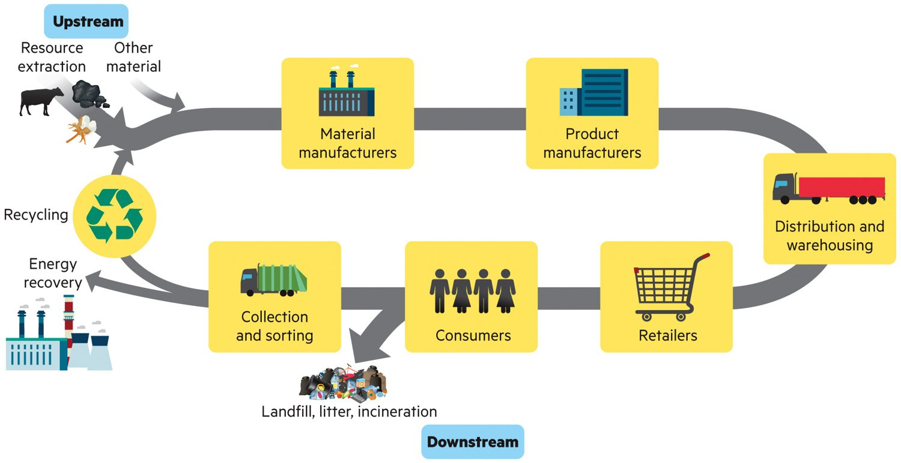
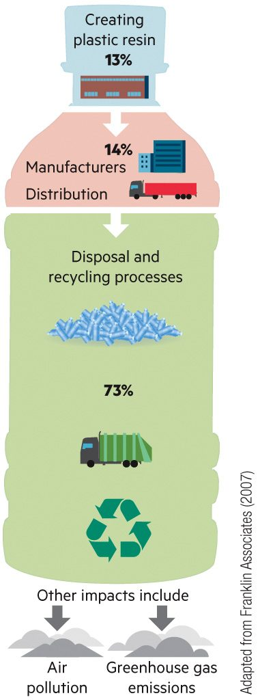
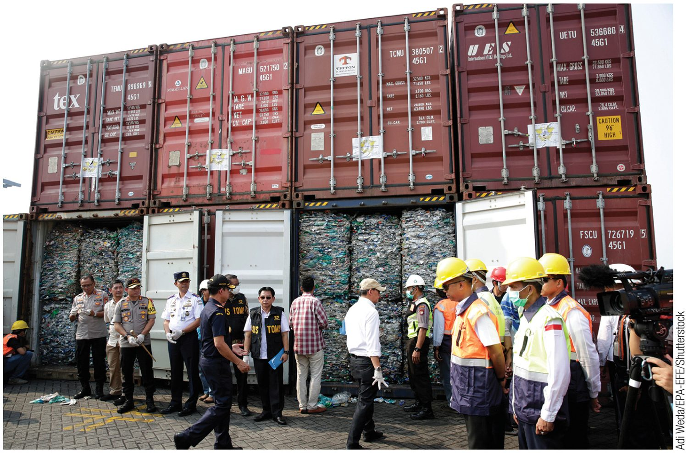
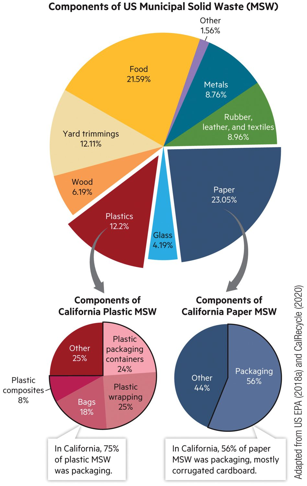
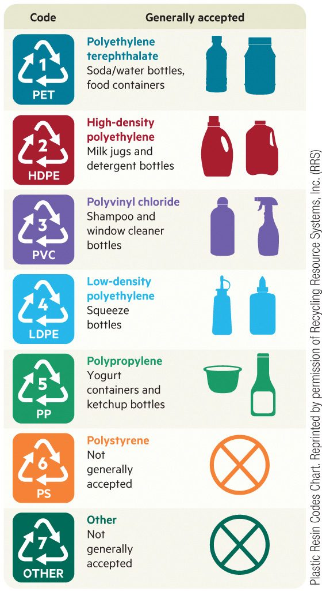
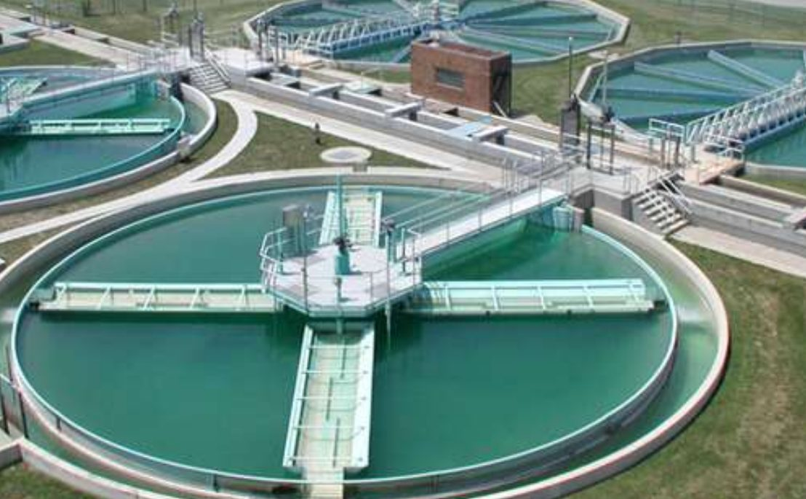
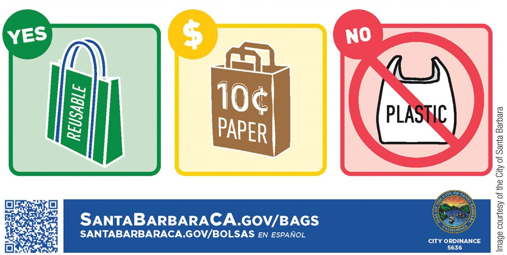

One question from last time. Pick an answer, then tap Show answer.
A renter wants rooftop solar but cannot put panels on a roof they do not own. What does this show?
Photo: instructor-supplied
Lecture17This slideReview quizCorrect answer: B. This is the energy-equity idea from Lecture 16.
SOS110 · Lecture 17 · Big idea 1 · Waste is a flow
Out of sight is not gone
In 1997, Captain Charles Moore found a huge area of floating plastic between Hawaii and California. Tap an icon.
Lecture17This slideGarbage patchFigure: (a) Captain Moore, (b) the North Pacific Gyre, (c) a cleanup barrier. Credits are printed on the figure. Facts: chapter 15.
More information
A soup of plastic
The patch is a soup of floating flakes mixed with larger things like bags and bottles. Ocean currents called the North Pacific Gyre swirl it together.
The patch did not exist before the 1960s, when plastic became a new material.
More information
Tiny pieces, big problem
Plastic breaks into very small fragments called microplastics. Krill, mussels and small fish eat them by accident.
Toxic chemicals in the plastic can then build up as one animal eats another, up the food chain. This is called bioaccumulation.
More information
Added chemicals
Makers add chemicals to plastic to change how it behaves. Three examples:
Phthalates make plastic flexible.
Bisphenol A makes it hard.
PBDEs make it resist fire.
More information
Can we clean it up?
Floating barriers like the one in picture (c) try to collect plastic from the water. Cleanup helps, but plastic keeps coming. Making less is the part that works upstream.
Facts and numbers
Plastic production
Plastic was a new material in the 1960s. Today we make it very fast.
Made each year
200M+
tons of plastic
Found in
1997
by Captain Moore
Did not exist before
1960s
plastic was brand new
SOS110 · Lecture 17 · Big idea 1 · Waste is a flow
A waste stream flows downstream
Waste is anything we decide is unusable or unwanted. Matter cannot be destroyed, so it keeps moving. Tap a red icon.

UpstreamEverything before the product reaches a store: digging, making and shipping.
DownstreamFrom distribution to the consumer and then to disposal.
ThinkPick one thing you own. Which stage hurts the environment most: the one you can see, or the ones you cannot?
Lecture17This slideWaste streamFigure: waste stream, from chapter 15. Copper mining example is general knowledge, not from the chapter.
Upstream
Resource extraction
Every product starts as something dug, drilled or grown. Arizona has large copper mines, and copper ends up in wires and phones.
Upstream
Material manufacturers
Mills and factories turn raw material into plastic pellets, steel, glass or paper. This step makes waste you never see.
Upstream
Product manufacturers
A factory builds the product. Making 30 computer microchips makes about 90 pounds of waste, even though the chips weigh almost nothing.
Downstream
Distribution and warehousing
Products travel by truck, ship and plane and wait in warehouses. This is where the downstream half of the stream begins.
Downstream
Retailers
Stores and websites sell the product. Unsold goods and extra packaging can become waste here.
Downstream
Consumers
Households and businesses use things and then throw some away. That is municipal solid waste.
Downstream
Collection and sorting
Trucks pick up what we throw out and workers and machines sort it into what goes where.
Downstream
Landfill, litter, incineration
The end of the line for most waste: buried, burned, or left as litter. The next slides look at what each one costs.
Loops back upstream
Recycling
Recycling sends materials back upstream to become new products. The loop in the figure is what a circular economy tries to widen.
Loops back upstream
Energy recovery
Burning waste in a plant that captures the heat can make electricity. It saves some energy, but it is not a free pass.
SOS110 · Lecture 17 · Big idea 1 · Waste is a flow
How much do we throw out?
The EPA says Americans add 4.9 pounds of garbage per person every day. Pick a group and see the total.
Every day4.9pounds
Every year1,789pounds
That is one person. Look at the chart: which countries make more?
Lecture17This slideTrash per personChart adapted from OECD (2022), as printed on the figure. The 40-person class and 5 million people are teaching numbers; 4.9 lb per day is the EPA estimate in the chapter.
More information
Municipal solid waste (MSW)
MSW is the garbage households and businesses throw away. It does not count waste made upstream, in mines and factories, before the product reaches you.
Facts and numbers
US trash in numbers
Per person, the United States is one of the largest makers of MSW. Only Denmark is higher on this chart.
Per person, per day
4.9 lb
EPA estimate
Per person, per year
1,800+
pounds, as the chapter states
Compared with 1960
~2×
nearly double today
SOS110 · Lecture 17 · Big idea 1 · Waste is a flow
The trash you don’t see
Throwing away a computer’s 30 microchips adds almost nothing to your trash. Making them is another story.
In your trash can30 microchips, thrown away
1.5 ounces
Made upstreamWaste from making those 30 chips
90 pounds
~960×more waste upstream than in the trash can. We worked this out: 90 pounds is 1,440 ounces, and 1,440 ÷ 1.5 = 960.
Quick question: if we only count what we throw away, what do we miss? The waste made upstream while making the product.
Lecture17This slideHidden wasteNumbers from the chapter. “960 times” is our own calculation, shown above.
More information
Solid waste is wider than MSW
Solid waste is the bigger category. It includes everything discarded as solid, liquid, semisolid or contained gas.
MSW is only the part that comes from homes and businesses.
SOS110 · Lecture 17 · Big idea 1 · Waste is a flow
Follow a bottle start to finish
A life cycle assessment adds up the impact of every step. Tap a red icon on the bottle.
Where a plastic water bottle’s solid waste comes from
How many times do you refill one bottle?Slide to try. Research finds that a bottle refilled more than 50 times beats single-use bottles, even recycled ones.

Lecture17This slideLife cycleFigure adapted from Franklin Associates (2007), as printed on the figure. The 50-use finding is from the chapter.
More information
Step 1 · Making the plastic
Making the plastic resin makes 13% of the bottle’s solid waste. It also adds air and water pollution.
More information
Step 2 · Making and moving it
Shaping the bottle and shipping it makes another 14% of the solid waste.
More information
Step 3 · Disposal and recycling
Most of the waste, 73%, comes from disposal and recycling processes. A recycled bottle is not free of impact.
Other impacts across all steps: air pollution, greenhouse gases, water pollution and effects on health.
SOS110 · Lecture 17 · Big idea 2 · Every way has a cost
When waste is dumped
Most of the world still uses open dumps: unregulated piles of waste. Tap an icon on the picture or the list.
Lecture17This slideDumpingThe picture is a drawing. Facts are from chapter 15.
More information
Polluting gas
As waste rots it gives off methane and carbon dioxide, two greenhouse gases. Methane can also explode.
Methane started fires at the Smokey Mountain dump in the Philippines, hurting people and releasing pollutants such as dioxins, which can cause lung cancer.
More information
Leachate
Leachate is a foul liquid made when rain or groundwater mixes with rotting waste.
It can carry ammonia, heavy metals, dioxins and germs. It can seep into soil and drinking water and harm people, plants and wildlife.
Facts and numbers
Smokey Mountain, Manila
Until 1995 the city of Manila piled waste into an open dump. More than 30,000 people lived there and made a living by scavenging food and materials to sell or trade.
Garbage piled up
2M
tons
People living there
30,000+
scavenging for a living
Open until
1995
the dump era ended
More information
Dumping at sea
Sewage sludge is what is left after sewage is treated. Dredge spoils are mud scraped from waterways so ships can pass.
Both can feed algae blooms and dead zones, and the mud can hold mercury and lead. Industrial waste can build up in fish that people eat. Some governments have also dumped chemical and radioactive waste in oceans.
SOS110 · Lecture 17 · Big idea 2 · Every way has a cost
Who lives downstream?
Garbage does not just go away. Where it ends up is often a fairness question. Tap an icon.
ThinkIs it fair for people in one place to carry the cost of what people in another place throw away?

Lecture17This slideWho bears itPhoto credit is printed on the image (Adi Weda/EPA-EFE/Shutterstock). Facts: chapter 15.
More information
The 1987 barge
In 1987 a barge carrying more than 3,000 tons of garbage from Islip, New York, looked for a place to dump it. North Carolina, Mexico and Belize all refused. The barge went back to New York, where the waste was burned.
Soon after, 121 countries (not the United States) signed the Basel Convention, which limits moving hazardous waste from richer countries to poorer ones.
Facts and numbers
Waste trade today
Much of what is shipped is e-waste: waste from electronic devices. In poorer countries it is taken apart by hand, at great risk to workers and the surrounding land.
Shipments mislabeled
~20%
called recyclable paper or plastic, but really household trash
Where it goes
Asia and Africa
to avoid costly disposal at home
Treaty
121
countries signed the Basel Convention
More information
Environmental justice
Most US landfills are near larger shares of Black, Latino and lower-income residents. For years, North Carolina sent Chapel Hill’s waste to lower-income neighborhoods like Afton, until new landfills and sewage plants were built in Chapel Hill itself.
In Warren County, North Carolina, protesters lay down in the road to stop a hazardous waste facility. This helped start the environmental justice movement.
SOS110 · Lecture 17 · Big idea 2 · Every way has a cost
Isolation: bury it and watch it
The main way the United States handles waste is isolation: keeping it away from people and the environment.
Lecture17This slideIsolationThe picture is a drawing of a modern sanitary landfill. Facts are from chapter 15.
More information
A sanitary landfill
New landfills are placed with care: not in wetlands or floodplains, and with the ground, water and rainfall in mind. Each day the new waste is covered with dirt so it does not blow away or attract animals.
More information
Liner and drains
The bottom has a layer of clay or plastic that water cannot pass through. Pipes above it collect leachate and send it to a tank for safe disposal.
More information
Gas wells
Pipes collect methane so it can be burned or used for fuel, instead of floating into the air.
More information
Leachate tank
Leachate is pumped from the bottom of the landfill to a tank, then treated.
More information
Monitoring wells
Wells around the landfill check whether leachate or methane has escaped.
More information
Beneath the surface
Deep wells inject liquid waste from industry, mining and oil and gas into porous rock under layers that water cannot cross. Containment buildings store hazardous waste above ground, behind air-lock doors, with constant monitoring.
Radioactive waste from defense work goes to a salt cavern near Carlsbad, New Mexico. Spent fuel from nuclear plants has no permanent home yet and is stored at the plants.
More information
When isolation fails
The EPA and consultants have found that leachate will eventually escape as plastic liners break down, carrying heavy metals and other chemicals.
Deep wells have had thousands of failures, such as leaks and injections that crack the rock. In 2011 a tsunami damaged the Fukushima plant in Japan and storage tanks of contaminated water leaked.
Facts and numbers
Isolation in numbers
Landfills are the biggest human source of methane in the world.
Landfill share of human methane
37%
worldwide
Radioactive waste cavern
2,000 ft
deep, in salt, near Carlsbad NM
Well failures
1000s
linked to deep-well injection
SOS110 · Lecture 17 · Big idea 2 · Every way has a cost
Burn it or convert it
Two more ways to handle waste. Incineration burns it under control. Conversion turns it into something useful.
Lecture17This slideBurn or convertThe picture is a drawing. Facts are from chapter 15.
More information
Incineration
Combustion is burning waste. It shrinks the waste and gives heat, but open burning can cause uncontrolled fires and air pollution.
Incineration is controlled burning at high temperatures with pollution controls. About three-quarters of incinerators use mass burn: burn the solid waste, then burn the gases again. Another method turns waste into dry pellets after glass and metal are taken out.
More information
Pollution controls
A modern plant removes nitrogen oxides, uses scrubbers to take out air pollutants, catches fine particles, and runs tests. New US emission rules in 1987 cut dioxin releases from incinerators by more than 99%.
It still releases carbon dioxide and harmful compounds like dioxins and furans.
More information
Waste-to-energy
In a waste-to-energy plant, heat from burning boils water. The steam turns a turbine that makes electricity. Plants are popular in Japan, Brazil and Western Europe.
Landfills can also capture methane and burn it for steam or turn it into vehicle fuel.
More information
Ash is left over
Burning leaves ash that must still be taken somewhere. Burning shrinks the waste by 80% to 90%, but it does not make it vanish.
More information
Bioreactors and remediation
A bioreactor landfill adds water and air so waste breaks down faster and makes less methane.
Remediation turns hazardous waste into less harmful stuff. Bioremediation uses microbes and enzymes, mycoremediation uses fungi and phytoremediation uses plants, to break down toxins like pesticides and PCBs.
More information
Building on old dumps
In the early 1900s many US cities filled wet areas with garbage so they could be built on. The Meadowlands area of New Jersey, where MetLife Stadium now stands, was contaminated by years of dumping. Land like this must be cleaned up before anyone builds.
Facts and numbers
Burning in numbers
Some countries burn most of their waste.
US waste burned
<12%
goes to incinerators
Volume shrinks by
80–90%
at high temperatures
Dioxins after 1987 rules
−99%
from US incinerators
SOS110 · Lecture 17 · Big idea 2 · Every way has a cost
What’s in our trash?
Four things make up most of US trash by weight. Tap a red icon on the chart.

Lecture17This slideTrash makeupFigure adapted from US EPA (2018) and CalRecycle (2020), as printed on the figure.
More information
Paper and paperboard
23.05%
The biggest part of US trash by weight. In California, 56% of paper waste was packaging, mostly corrugated cardboard.
More information
Food
21.59%
Almost as big as paper. Food in a landfill rots and makes methane. The next slides are about food waste.
More information
Yard trimmings
12.11%
Leaves, grass and branches. Nearly two-thirds of yard trimmings are already composted.
More information
Plastics
12.2%
Only a small share is recycled: less than one-tenth.
More information
Rubber, leather and textiles
8.96%
Tires, shoes and clothes. Our jeans exercise follows one of these.
More information
Metals
8.76%
More than one-third of metals are recycled.
More information
Wood, glass and other
6.19% wood, 4.19% glass, 1.56% other
About one-quarter of glass is recycled.
More information
California plastic waste
75% packaging
In a California study, 75% of plastic waste was packaging. The rest of the plastic was bags, wrapping, containers and mixed plastics.
More information
California paper waste
56% packaging
In the same study, 56% of paper waste was packaging, mostly corrugated cardboard.
More information
The biggest four
By weight, the four largest parts of US municipal solid waste are paper, food scraps, yard trimmings and plastics. Together they are about 69% of everything we throw away.
More information
Your own trash
Think of the last three days. What did you throw out most: food, paper, plastic bottles or packaging? Keep your answer. You will use it in the exercise at the end.
Facts and numbers
US trash by weight
Percent of US municipal solid waste.
Paper
23.05%
biggest slice
Food
21.59%
second biggest
Plastics
12.2%
and yard trimmings 12.11%
Also: rubber, leather and textiles 8.96%, metals 8.76%, wood 6.19%, glass 4.19%, other 1.56%.
SOS110 · Lecture 17 · Big idea 2 · Every way has a cost
Recycling: closed or open loop?
Recycling means treating waste as a resource for new products. Not all recycling is the same.
0 right
Lecture17This slideRecycling loopsExamples are from chapter 15. Tap the cards to play. Answers are checked in your browser.
More information
Three words
Closed-loop recycling (primary): waste becomes the same kind of product, like aluminum cans into new cans. It is the most efficient.
Open-loop recycling (secondary, also called downcycling): waste becomes a different, lower-quality product, like water bottles into a fleece jacket. It needs extra energy and materials.
Reuse: use the same thing again, with no remaking.
SOS110 · Lecture 17 · Big idea 2 · Every way has a cost
Recycling: how far have we come?
The recycling rate is the share of municipal solid waste that is recycled. It is useful, and it is uneven.
6%→34%US recycling rate, 1960 to 2018
Share recycled, by material (US)
Paper products
more than two-thirds
Yard trimmings (composted)
nearly two-thirds
Metals
more than one-third
Glass
about one-quarter
Plastics
less than one-tenth
Lecture17This slideRecycling ratesBar lengths are drawn from the chapter’s words (“more than”, “about”, “less than”), so they are approximate.
More information
Countries that recycle half or more
The Netherlands, Germany, Austria, Switzerland, Taiwan and South Korea have met or beaten a 50% recycling rate.
Differences between countries come from waste policy and from how people think about buying and throwing things away.
Facts and numbers
US recycling by material
Rates are from the chapter and are shown as it states them.
Overall US rate
34%
in 2018, up from 6% in 1960
Paper products
>2/3
recycled
Plastics
<1/10
recycled
SOS110 · Lecture 17 · Big idea 2 · Every way has a cost
Recycling helps, but it has limits
Recycling saves energy and cuts the harm of landfills and mining. It does not fix everything. Tap an icon.

Lecture17This slideRecycling limitsChart: Plastic Resin Codes Chart, reprinted with permission of Recycling Resource Systems, Inc., as printed on the figure. ASU facts: ASU Zero Waste blue bin guide.
More information
The number in the triangle
The number tells you the kind of plastic, not whether your bin takes it. Codes 1 and 2 (bottles and jugs) are generally accepted. Codes 6 and 7 are not generally accepted. Always check your local rules.
Facts and numbers
Why plastic recycling is costly
Plastics come in many kinds with different additives for color and strength. Sorting and cleaning them takes a lot of work.
Recycled vs. new plastic
up to +40%
can cost more
Different kinds
7
resin codes to sort
Who decides
Markets
buyers must exist
More information
The market for recyclables
Recycling only works if someone buys the material. Prices rise and fall. When they fall far enough, some recycled material ends up in landfills anyway. Collection systems, shopper habits and product design matter too.
More information
Wishful recycling
Some things look recyclable but are not accepted in many places: a dirty yogurt cup, a thin plastic grocery bag and a leaking toothpaste tube. Putting them in the bin can spoil a whole load.
More information
ASU’s blue bin
ASU’s guide says the blue bin takes paper (if you can rip it), rigid plastics like bottles, jugs, tubs and cups, and metal cans and foil. It does not take soft plastic bags, Styrofoam or items smaller than 2.5 inches. Pizza boxes only if they have no grease and no pizza.
ASU’s lists have changed over time, so check the ASU Waste Directory for today’s rules.
More information
Design for recovery
Design for recovery guidelines set standards for making products so they are easy to recycle. Governments also run public education to help people sort better.
SOS110 · Lecture 17 · Big idea 2 · Every way has a cost
Food waste: farm to fork
About 40% of the food made in the United States goes uneaten. Food is lost at every stop between the field and your plate. Tap a stop to see how.
How much food gets wasted, and what does it cost?
Why does it happen?
At which stop could you make a difference?
Photo: instructor-supplied
Lecture17This slideFood wasteLayout inspired by interactive reading guides. All text and drawings here are our own. Facts: chapter 15.
Stop 1
On the farm
Some crops never leave the field. There may be too many, the size or shape may be off, or no one may buy them.
Stop 2
In transit and storage
Fresh food has to be kept cool and moved fast. Delays, heat and rough handling all spoil food.
Stop 3
At the store
Stores throw out food that looks bad or is close to its date, even if it is still safe to eat.
Stop 4
Restaurants and dining halls
Large portions, buffets and cooking more than people eat all create leftovers that get thrown out.
Stop 5
At home
At home we buy more than we eat, let food go bad at the back of the fridge, and scrape plates.
Facts and numbers
Food waste in the United States
Food that is not eaten can be saved by eating leftovers or by composting.
Food uneaten
40%
of food made in the US
Cost each year
$165B
in wasted food
Thrown away each year
35M tons
adds $2,000+ to the average yearly grocery bill
SOS110 · Lecture 17 · Big idea 2 · Every way has a cost
Why do we throw food away?
Instead of the trash can
Eat the leftoversMake a shopping listCompost it
Your turn: tap the page and pencil at the bottom right to pick your biggest reason and one fix.
Photo: instructor-supplied
Lecture17This slideFood waste, part 2Facts: chapter 15 and ASU Zero Waste pages. Choices on the answer panel are saved with your name.
More information
Why food gets thrown out
We buy more than we can eat before it spoils.
We forget what is at the back of the fridge.
We cook too much and nobody finishes it.
We worry about dates and how food looks.
Americans throw away 35 million tons of food a year. That adds more than $2,000 to the average yearly grocery bill.
More information
Restaurants, cafeterias and caterers
Big portions, buffets and cooking more than people eat all create waste. Food that is prepared but never served is thrown out too.
At ASU, dining halls collect food waste for composting, so scraps become soil instead of landfill. ASU’s residence hall compost program is paused for now, so check the Zero Waste pages for what is open today.
More information
Composting
Composting is a kind of recycling. Microbes break food scraps down into a dark, crumbly material that helps grow new crops. Many households and university campuses now collect food scraps for it.
Your answer
My food waste plan
1What is the biggest reason you throw out food?
2Write one thing you will do about it.
SOS110 · Lecture 17 · Big idea 3 · Close the loop
More ways to close the loop
Loops show up in surprising places. Tap an icon on each one.

Photo: instructor-supplied
Lecture17This slideMore loopsFacts: chapter 15. The photo shows tanks at a wastewater treatment plant.
More information
Reuse, refurbish, repurpose, upcycle
Until the 1970s, glass bottles in the United States were often returned to the maker, cleaned and reused. Today “freecycling” websites match people who have used things with people who want them. Upcycling makes something worth more than the original: a tiny house built from old shipping pallets.
More information
Kalundborg, Denmark
A coal-fired power plant sends steam to nearby factories for heat and gives raw materials to other businesses, such as a wallboard maker. One company’s waste becomes another’s supply. Eco-industrial parks work the same way.
More information
Biosolids
Human waste is a major cause of water pollution. Sewage treatment separates biosolids from the cleaned water. If the biosolids are treated to kill germs, they can become fertilizer. Boston makes dried fertilizer pellets, and Tacoma, Washington, mixes biosolids with yard waste into a topsoil called Tagro.
More information
The PLA problem
Biodegradable plastics are usually made of PLA, from plants like corn. PLA is hard to tell apart from PET (a petroleum plastic) in sorting, and it breaks down too slowly for most food composting. PET has to be taken out of food waste. So a cup labeled “100% biodegradable” can still cause trouble.
SOS110 · Lecture 17 · Big idea 2 · Every way has a cost
Run a city’s waste plan
A city of 500,000 people makes about 1,225 tons of trash a day. Move the sliders. Can you meet all three goals?
Landfill lasts32years
Methane score100today = 100
Cost$65per ton made
Landfill lasts 50+ yearsMethane score 50 or lessCost $70 per ton or less
Not madeRecycledCompostedBurnedLandfilled
Lecture17This slideCity waste simulationAll numbers here are teaching numbers: city size, landfill space (12 million tons), costs per ton and the 15% ash share. Trash mix is rounded from the chapter’s chart.
Your answer
My plan
1Write why you picked this plan, in one or two sentences.
More information
How the model works
Every ton starts as 4.9 pounds per person per day. Make less shrinks the total. Recycling works on paper, plastic and metal (about 44% of trash). Composting works on food and yard waste (about 34%). Burning works on what is left and shrinks it by 85%. The rest is landfilled.
Food and yard waste in a landfill make methane, so composting cuts the methane score. Recycling and burning cost more per ton than burying in this model, so a plan can win on land and lose on cost.
SOS110 · Lecture 17 · Big idea 3 · Close the loop
Why do we buy so much?
To make less waste, we have to buy less. But buying is about more than staying alive. Tap an icon.
Lecture17This slideCulture and buyingFacts: chapter 15. The picture is a drawing of printed cloth.
More information
Conspicuous consumption
Culture is the learned and shared ways a group of people thinks and acts. Buying and throwing away are part of it.
The economist Thorstein Veblen named conspicuous consumption in 1899. It is buying things so others can see them, like designer brands, to show who you are. Anthropologists add that people buy and trade things to build relationships.
More information
Wasting little was a point of pride
Before the 1950s, newspapers and magazines measured a household’s success by how little it wasted. People saved food scraps and reused cloth sacks for clothes and household items. Flour companies even printed their sacks with pretty patterns, and gave out sewing instructions so the cloth could become a dress.
More information
More stuff, more waste
After World War II, the economy grew and people had more money and more things to buy. Food packaging, especially plastic, is now one of the largest parts of household waste. Core samples drilled from landfills show that each time a new technology spreads, the waste stream changes.
Businesses make more money when they sell more, and economists use sales as a sign of a growing economy. That pushes consumption up.
More information
Garbology
The Garbage Project at the University of Arizona was started by William Rathje. Studying what people throw away is now called garbology. It has taught us what we recycle, how to make recyclable products better, and how much waste we make.
Think: if someone dug through your trash, what would they learn about you?
SOS110 · Lecture 17 · Big idea 3 · Close the loop
Everyone can cut waste
Reducing beats recycling, because the waste is never made. Four groups can help. Tap an icon.

Lecture17This slideReduceSign image courtesy of the City of Santa Barbara, as printed on the sign (the date line was cropped off). Facts: chapter 15.
Facts and numbers
Companies change when asked
In 1987 a group called the Citizens Clearinghouse for Hazardous Waste led a boycott of McDonald’s over foam packaging. McDonald’s cut its solid waste volume by 70% to 90% and switched to paper wrap. Large buyers like Walmart now ask suppliers to redesign packaging. Marks & Spencer, a British retailer, has called itself the most sustainable major retailer since 2007.
McDonald’s waste volume
−70–90%
after the 1987 boycott
Walmart plastic packaging
−415 t
per year
Walmart paper waste
−692 t
per year
More information
Bag bans
California was the first state to ban plastic bags, in 2014. Connecticut, New York and Oregon followed. More than 500 US cities and counties limit or ban single-use plastic bags at checkout. Most counties in Hawaii ban plastic and paper bags unless they hold at least 40% recycled content. The sign shows one city’s rule: reusable bags yes, paper 10 cents, plastic no.
More information
Producer responsibility
Under extended producer responsibility, the maker is responsible for collecting, recycling and disposing of what it sells. The cost moves from taxpayers to makers and buyers. Germany does this for packaging. Washington State makes e-product makers pay a fee that funds e-waste collection and recycling.
More information
Sharing instead of owning
Food co-ops and bike-sharing let neighbors share goods and services. Companies like Zipcar, Uber, Lyft and DiDi are built on the idea that more people will rent or hire a car instead of owning one. Fewer things made means less waste.
SOS110 · Lecture 17 · Big idea 3 · Close the loop
From linear to circular
A linear economy takes, makes, uses and dumps. A circular economy keeps things in use. Researchers describe three ways to do it.
LinearTake›Make›Use›Throw away
CircularMake›Use›Repair, reuse, recycle↺
Lecture17This slideCircular economyThree strategies follow Bocken et al. (2016), the module reading. Examples are from chapter 15.
More information
Slowing loops
Design things to last, and fix and reuse them. A refillable bottle used 50 times beats single-use bottles, even recycled ones. Returnable glass bottles were common until the 1970s.
More information
Closing loops
Turn waste into the raw material for the next product. Recycling aluminum cans into new cans, composting food into soil, and the Kalundborg factories that swap steam and materials all close loops.
More information
Narrowing flows
Use fewer resources for each product. Walmart’s packaging redesign and shoppers who buy less both narrow the flow. This is the earliest, cheapest step.
SOS110 · Lecture 17 · Big idea 3 · Close the loop
What can I do?
Five things you can try. Tap an icon to read more, then pick one and write it down.
Photo: instructor-supplied
Lecture17This slideWhat can I doFacts: chapter 15 and the ASU Zero Waste pages.
Action 1
Plan your food
Make a shopping list and use leftovers before buying more food. Americans throw away 35 million tons of food a year, which adds more than $2,000 to the average yearly grocery bill.
Action 2
Rethink what you buy
Ask if you really need a new product. Find ways to get more out of what you have. At ASU you can also rent large appliances and buy durable things that last past one year, like cookware.
Action 3
Track it and carry reusables
Track how much waste you make for a week. Keep a reusable water bottle, grocery tote and jars or bottles with you. ASU Starbucks takes a dollar off your drink when you bring your own cup.
Action 4
Audit your campus
Do a campus waste audit with the Post Landfill Action Network manual: sort a day’s waste and count what is in it.
Action 5
Help others use less
After college, Lauren Singer opened the Package Free Shop to help people find alternatives to single-use plastic. Bea Johnson’s blog has ideas for a zero-waste life.
Your answer
My pledge
1Which action will you try this week?
2Write one sentence about how you will do it.
SOS110 · Lecture 17 · Wrap-up
Check yourself
Four quick questions from the textbook. They are not recorded.
Lecture17This slideCheck yourselfQuestions adapted from the chapter 15 review questions.
Question 1
What is a waste stream?
Question 2
Waste-to-energy incineration is a process that…
Question 3
Primary (closed-loop) recycling is a process that…
Question 4
Which cultural response adds to waste?
SOS110 · Lecture 17 · Exit ticket
Exit ticket
Counts for participation. Pick an answer, then tap Show answer.
Which choice does the MOST to cut waste?
Lecture17This slideExit ticketCorrect answer: B. A bottle refilled more than 50 times beats single-use bottles, even recycled ones.
SOS110 · Lecture 17 · Takeaway
There is no “away”
Matter keeps cycling. Design for loops instead of dumps, and make the least waste first.
Waste is a flow that runs from mine to landfill, so look at the whole life cycle.
Burying, burning and recycling each have a cost, and some neighborhoods carry more of it.
Reduce and reuse first. Recycling and a circular economy keep the rest in use.
Still due in this moduleQuiz: Circular Economy and InQuizitive 15, 16 and 17. See the course site.
Photo: instructor-supplied
Lecture17This slideTakeawayPhoto: a constructed wetland in the Phoenix area that cleans used water.
 New neighborhoods on the desert edge of the Valley
New neighborhoods on the desert edge of the Valley Photo: instructor-supplied
Photo: instructor-supplied

 Photo: instructor-supplied
Photo: instructor-supplied Photo: instructor-supplied
Photo: instructor-supplied